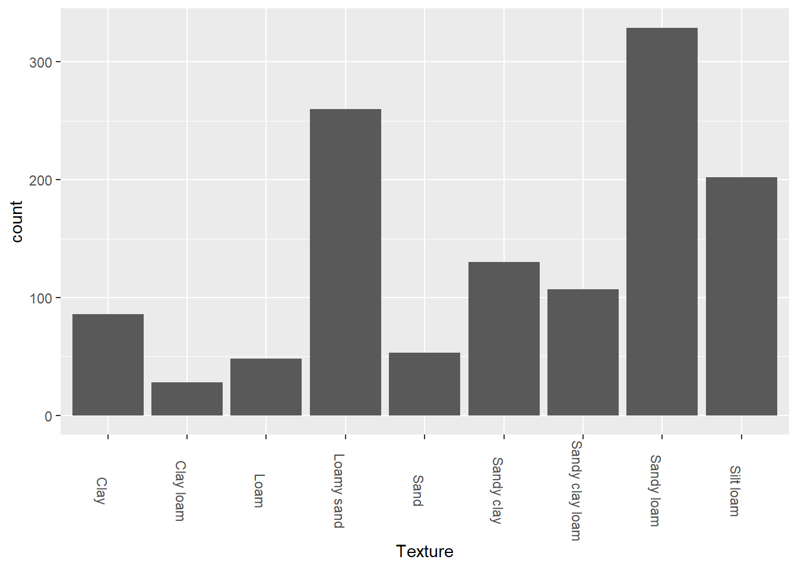

library(tidyverse)
library(ggplot2)
knitr::opts_chunk$set(echo = TRUE, warning=FALSE, message=FALSE)Final Project Vertical Farming
For my final project, I will be looking at data related to soil health. This data will involve studying observations from numerous studies, and interpreting how the quality of soil has changed over the years.
To know where and how to grow your crops is to understand the nutrients your crops require. This includes how much water the soil can absorb, the composition or texture of the soil,
SoilHealth <- read_csv("_data/SoilHealthDB_V0.csv", show_col_types = FALSE)
SoilHealth# A tibble: 5,241 × 273
StudyID ExperimentID Author_F Autho…¹ YearP…² Sampl…³ Journal SiteI…⁴ Country
<dbl> <lgl> <chr> <chr> <dbl> <dbl> <chr> <chr> <chr>
1 1 NA Abawi G.S. 2000 NA Applie… New Yo… USA
2 1 NA Abawi G.S. 2000 NA Applie… New Yo… USA
3 1 NA Abawi G.S. 2000 NA Applie… New Yo… USA
4 1 NA Abawi G.S. 2000 NA Applie… New Yo… USA
5 1 NA Abawi G.S. 2000 NA Applie… New Yo… USA
6 1 NA Abawi G.S. 2000 NA Applie… New Yo… USA
7 1 NA Abawi G.S. 2000 NA Applie… New Yo… USA
8 1 NA Abawi G.S. 2000 NA Applie… New Yo… USA
9 1 NA Abawi G.S. 2000 NA Applie… New Yo… USA
10 1 NA Abawi G.S. 2000 NA Applie… New Yo… USA
# … with 5,231 more rows, 264 more variables: Latitude <dbl>, Longitude <dbl>,
# Elevation <dbl>, Tannual <dbl>, MAT <dbl>, Pannual <dbl>, MAP <dbl>,
# ClimateType <chr>, TimeAfterCoverCrop <dbl>, Duration <dbl>,
# CC_planting_date <lgl>, CC_termination_date <lgl>, Time_Comments <chr>,
# SamplingDepth <chr>, SamplingThickness <chr>, SoilDepthGroup <lgl>,
# SurfaceSubsurface <lgl>, SoilBD <dbl>, SandPerc <dbl>, SiltPerc <dbl>,
# ClayPerc <dbl>, Texture <chr>, SoilpH <dbl>, BackgroundSOC <dbl>, …
# ℹ Use `print(n = ...)` to see more rows, and `colnames()` to see all variable namesNow, this is a large dataset, and it’ll require a lot of cleaning up in order to obtain the data we need. So, without further ado, let’s get rid of some junk.
SoilHealthFixed <- SoilHealth %>%
select_if(~!(all(is.na(.)) | all(. == ""))) %>%
select(-contains("Comments") & -contains("Author") & -contains("ClimateType") & -contains("Journal") & -contains("_C") & -contains("NoSubsample")) %>%
filter(!is.na(Country)) %>%
filter(!is.na(CoverCropGroup)) %>%
filter(!is.na(GrainCropGroup)) %>%
filter(!is.na(Texture)) %>%
filter(!is.na(SamplingThickness)) %>%
filter(!is.na(Duration)) %>%
filter(!is.na(SoilpH)) %>%
filter(!str_detect(CoverCropGroup, 'Not_available')) %>%
filter(!str_detect(Texture, 'NotAvailable')) %>%
filter(!str_detect(SamplingThickness, 'Not-available')) %>%
mutate(SamplingThickness = as.double(SamplingThickness))
SoilHealthFixed# A tibble: 1,920 × 120
StudyID YearP…¹ Sampl…² SiteI…³ Country Latit…⁴ Longi…⁵ Eleva…⁶ Tannual MAT
<dbl> <dbl> <dbl> <chr> <chr> <dbl> <dbl> <dbl> <dbl> <dbl>
1 7 1999 1995 Aurora… USA 45.2 -123. 48.4 NA NA
2 7 1999 1995 Aurora… USA 45.2 -123. 48.4 NA NA
3 7 1999 1995 Aurora… USA 45.2 -123. 48.4 NA NA
4 10 2015 2010 Univer… USA 43.1 -89.5 332. NA NA
5 10 2015 2011 Univer… USA 43.1 -89.5 332. NA NA
6 10 2015 2011 Univer… USA 43.3 -89.3 326. NA NA
7 10 2015 2010 Univer… USA 43.1 -89.5 332. NA NA
8 10 2015 2011 Univer… USA 43.1 -89.5 332. NA NA
9 10 2015 2011 Univer… USA 43.3 -89.3 326. NA NA
10 10 2015 2010 Univer… USA 43.1 -89.5 332. NA NA
# … with 1,910 more rows, 110 more variables: Pannual <dbl>, MAP <dbl>,
# TimeAfterCoverCrop <dbl>, Duration <dbl>, SamplingDepth <chr>,
# SamplingThickness <dbl>, SoilBD <dbl>, SandPerc <dbl>, SiltPerc <dbl>,
# ClayPerc <dbl>, Texture <chr>, SoilpH <dbl>, BackgroundSOC <dbl>,
# SOC_NaturalVeg <dbl>, SoilKsat <dbl>, SoilFamily <chr>, CoverCrop <chr>,
# CoverCropGroup <chr>, GrainCrop <chr>, GrainCropGroup <chr>,
# Rotation_T <chr>, Rotation_Diff <chr>, Tillage_T <chr>, …
# ℹ Use `print(n = ...)` to see more rows, and `colnames()` to see all variable namesAlright, now, let’s take a look at some bar graphs to see how each of these samples differ. Let’s start with the crop cover groups that our soil has.
SoilHealthFixed %>%
ggplot(aes(x = CoverCropGroup)) +
geom_bar() +
theme(axis.text.x = element_text(angle = 270))
As we can see here, the full majority of cover crops are within the legume group.
SoilHealthFixed %>%
ggplot(aes(x = GrainCropGroup)) +
geom_bar() +
theme(axis.text.x = element_text(angle = 270))
As expected, corn is the main grain crop group observed. I believe corn is used for more than just a food source, but also for livestock, starch, beverage and industrial alcohol, and fuel ethanol. That’s why you see so much corn out here in the US.
SoilHealthFixed %>%
ggplot(aes(x = Texture)) +
geom_bar() +
theme(axis.text.x = element_text(angle = 270))
The majority of the samples taken in this study were sandy loam or silty loam, or a mix of the three soil compositions, sand, silt and clay.
Now let’s take a look at which soil textures are most common with legumes AND corn.
SoilHealthFixed %>%
filter(str_detect(CoverCropGroup, 'Legume')) %>%
filter(str_detect(GrainCropGroup, 'Corn')) %>%
ggplot(aes(x = Texture)) +
geom_bar() +
theme(axis.text.x = element_text(angle = 270))
So, here we notice that most environments where they grow both legumes and corn are in sandy loam, or loamy sand. This could indicate that both plants tend to grow in environments where water is more easily absorbed by the soil.
Let’s take a look at where these samples were studied too.
SoilHealthFixed %>%
ggplot(aes(x = Country)) +
geom_bar() +
theme(axis.text.x = element_text(angle = 270))
So, as expected, the full majority of our data was taken from the United States. Before I added the restrictions on the SoilpH, the number of samples in the USA exceeded over a thousand. By adding the
SoilHealthFixed %>%
#filter(!is.na(SoilpH)) %>%
#filter(!is.na(Texture)) %>%
#filter(str_detect(CoverCropGroup, 'Rye')) %>%
#filter(str_detect(Country, 'USA')) %>%
#filter(!str_detect(CoverCropGroup, 'Not_available')) %>%
ggplot(aes(Texture, SoilpH)) +
geom_boxplot() +
geom_hline(yintercept = 5.5, color = "red") +
geom_hline(yintercept = 7.5, color = "red") +
theme(axis.text.x = element_text(angle = 270))
Between the two red lines are the pH levels for healthy soils. As we can see here, there weren’t enough soil samples that offered pH for silt, but what this graph does show is that whatever samples they WERE able to obtain the pH for were not exactly healthy.
SoilHealthFixed %>%
#filter(!is.na(SoilpH)) %>%
ggplot(aes(CoverCropGroup, SoilpH)) +
geom_boxplot() +
geom_hline(yintercept = 5.5, color = "red") +
geom_hline(yintercept = 7.5, color = "red") +
theme(axis.text.x = element_text(angle = 270))